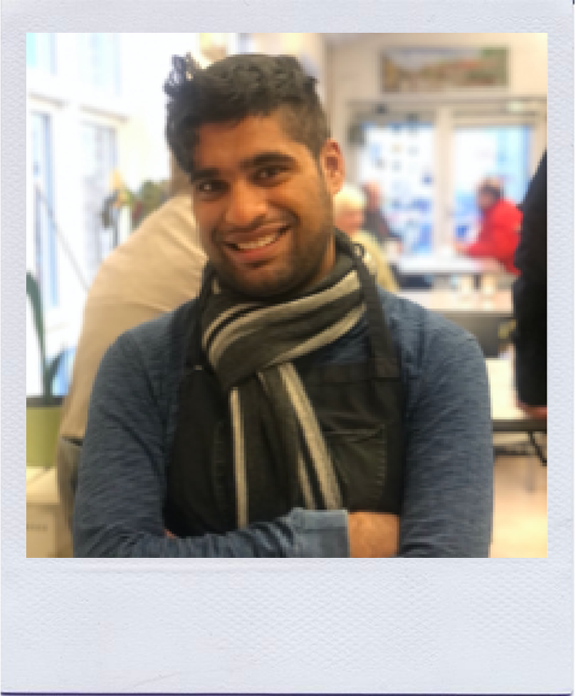
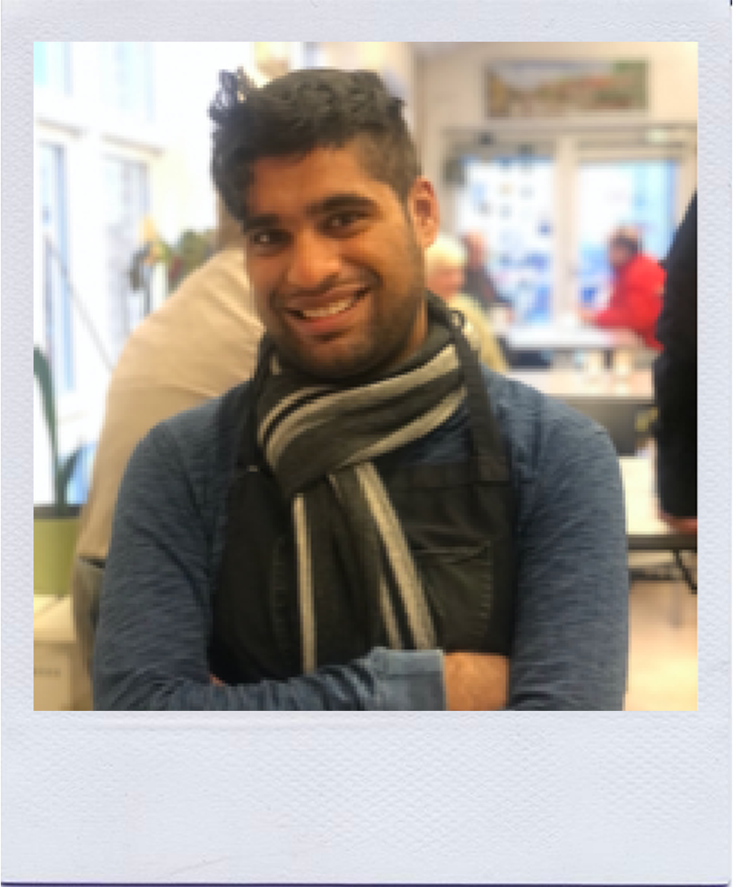

Bliv frivillig
I Café Parasollen arbejder der ca. 40 forskellige frivillige, som i hold af 4-5 timers vagter løser dagens opgaver
Det kan være madlavning, bagning, fremstilling af smørrebrød, rengøring og ikke mindst samvær og samtale med gæsterne.
 

Hvad er frivilligt arbejde?
Det er at tage en praktisk tørn et par timer om ugen
Det er at få mere igen, end man giver ud
Det er at være en del af et godt fællesskab
Det er at møde en masse dejlige mennesker, som man ellers ikke ville have mødt
Det er at gøre en forskel for nogle mennesker, for hvem livet ikke er så enkelt
Vil du være frivillig?
Om du har få eller mange timer at give, om det er hverdag eller weekend, formiddag eller eftermiddag er ikke det vigtigste.
Det er derimod din lyst til at gøre en frivillig indsats, hvor du får meget igen. Udfyld skemaet nedenfor for en uforpligtende samtale. Vi glæder os til at se dig i caféen.